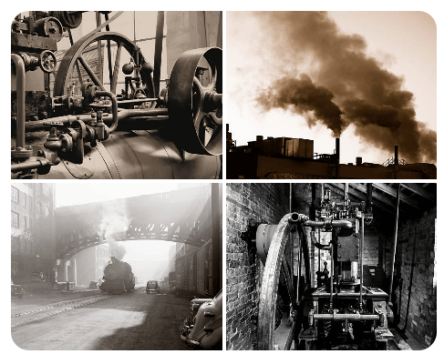
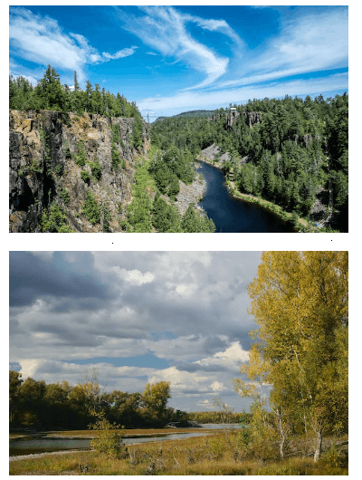
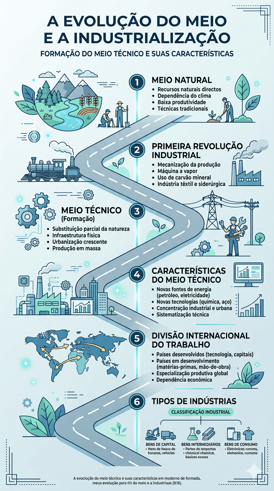

Conteúdo:
Objetivo: Estudar a formação do meio técnico e identificar suas características fundamentais. Relacionar tais características ao processo de industrialização.
Introdução
Na aula passada, mergulhamos no processo de avaliar o desenvolvimento dos países, tarefa nada fácil.
Hoje, vamos embarcar em uma jornada pela história da industrialização mundial e suas profundas transformações geográficas. Ao longo do tempo, a humanidade tem testemunhado mudanças significativas no modo como produzimos bens, organizamos nossas sociedades e interagimos com o meio ambiente.
Nesta aula, exploraremos os diferentes estágios desse processo, desde a formação do meio técnico até os impactos das revoluções industriais em escala global.
Questões para responder no caderno
1. Como o ser humano modificou o meio natural para criar o meio técnico necessário ao desenvolvimento industrial?
2. Quais são os exemplos de transformações do meio natural mencionados no texto?
3. Explique o conceito de "meio técnico" conforme apresentado no texto.
4. O que foi a Revolução Industrial e qual foi o seu impacto global?
5. Quais foram os principais avanços tecnológicos da Primeira Revolução Industrial?
6. Como a Segunda Revolução Industrial impactou as sociedades e a economia?
7. Quais são as características da Terceira Revolução Industrial, também conhecida como Revolução Técnico-Científica?
8. Explique as diferentes maneiras de classificar as indústrias mencionadas no texto.
9. Quais são os principais fatores de produção que impulsionam a indústria?
10. Qual é a relação entre o meio natural e o desenvolvimento industrial ao longo da história, conforme descrito no texto?
Meio Natural e Meio Técnico
Ao longo da história, o ser humano tem exercido um papel fundamental na modificação do meio natural para criar o meio técnico necessário ao desenvolvimento industrial. Um exemplo marcante é a canalização de rios para a geração de energia hidrelétrica, um processo utilizado em diversos países, como Brasil, China e Canadá. Essa transformação do curso dos rios não apenas fornece energia limpa e renovável, mas também influencia diretamente o ambiente ao redor, alterando ecossistemas aquáticos e terrestres.
Outro exemplo é o desmatamento para abrir espaço para áreas industriais. Países como Estados Unidos, Rússia e Brasil têm enfrentado o desafio de equilibrar a expansão industrial com a preservação ambiental. A Amazônia, por exemplo, tem sido alvo de intensa exploração industrial, levando a preocupações sobre o impacto na biodiversidade e no clima global.

Fonte: pexels.comA extração de recursos minerais também desempenha um papel crucial no desenvolvimento industrial. Países como Austrália, Chile e África do Sul são importantes produtores de minerais utilizados na fabricação de produtos industrializados. No entanto, essa exploração muitas vezes gera conflitos socioambientais, como os observados em regiões de mineração na África, onde comunidades locais enfrentam desafios relacionados à poluição e ao deslocamento.

Fonte: pexels.comRevolução Industrial
A Revolução Industrial teve origem na Inglaterra do século XVIII e se espalhou pelo mundo, transformando radicalmente as sociedades e economias. Um exemplo emblemático é o desenvolvimento da máquina a vapor por James Watt, que impulsionou a produção em larga escala e a expansão das ferrovias, ampliando as conexões entre diferentes regiões e países.
 Fonte: pexels.com
Fonte: pexels.com
As repercussões da Revolução Industrial foram globais, afetando países em todos os continentes. Nos Estados Unidos, por exemplo, a Revolução Industrial estimulou o crescimento econômico e a expansão territorial, com a construção de ferrovias e a consolidação de indústrias como a siderúrgica e a automobilística. Na Alemanha, a Segunda Revolução Industrial trouxe avanços significativos na indústria química e na produção de aço, contribuindo para a ascensão do país como potência industrial.
Conectando com a última aula sobre globalização, podemos observar como a Revolução Industrial foi um catalisador para o processo de globalização. O surgimento de novas tecnologias e métodos de produção facilitou a integração econômica e a circulação de mercadorias em escala mundial. Além disso, a demanda por recursos naturais e mão de obra barata impulsionou o colonialismo e o comércio internacional, estabelecendo conexões cada vez mais complexas entre os países.
As Revoluções Industriais: Mudando o Mundo
Primeira Revolução Industrial
A Primeira Revolução Industrial marcou o início da era moderna, iniciando-se na Inglaterra do século XVIII. Com a introdução da máquina a vapor e a mecanização da produção têxtil, a forma como os bens eram produzidos mudou drasticamente. Exemplo disso é a invenção do tear mecânico por Edmund Cartwright, que aumentou significativamente a velocidade de produção de tecidos. O impacto da Primeira Revolução Industrial foi sentido não apenas na esfera econômica, mas também na social, com o surgimento de novas classes sociais, como a burguesia industrial, e o crescimento das cidades devido à migração do campo para as fábricas nas áreas urbanas.
 Tear mecânico de Edmund Cartwright. Fonte:
pexels.com
Tear mecânico de Edmund Cartwright. Fonte:
pexels.com
Segunda Revolução Industrial
A Segunda Revolução Industrial, ocorrida no final do século XIX até a década de 1970, foi impulsionada por avanços como eletricidade, petróleo e aço. A eletricidade, por exemplo, permitiu a automação de processos industriais, enquanto o petróleo e o aço foram essenciais para o desenvolvimento de novos setores industriais, como o automobilístico e o químico. Países como Estados Unidos, Alemanha e Japão foram os principais protagonistas desse período, que testemunhou uma rápida urbanização e um aumento sem precedentes na produção em massa.
 Fonte: pexels.com
Fonte: pexels.com
Terceira Revolução Industrial
A Terceira Revolução Industrial, também conhecida como Revolução Técnico-Científica, teve início na segunda metade do século XX com o advento da revolução digital e das tecnologias da informação. A computação, a internet e a robótica revolucionaram completamente os processos de produção, distribuição e consumo, levando à automatização de tarefas e ao surgimento de novos modelos de negócios. Empresas como Google, Apple e Microsoft se tornaram gigantes globais, enquanto países como Estados Unidos, Japão e China lideraram o desenvolvimento tecnológico nesse período.
 Fonte: pexels.com
Fonte: pexels.com
Essas três revoluções industriais não apenas mudaram a face da indústria, mas também redefiniram o curso da história humana, moldando o mundo moderno em que vivemos.
Classificação das Indústrias: Uma Visão Abrangente
Neste tópico, vamos explorar as diversas maneiras de classificar as indústrias:
Quanto ao Fator Histórico
Ao longo da história, as indústrias passaram por diferentes estágios de evolução, refletindo mudanças nos métodos de produção e organização do trabalho. Começando pelo artesanato, onde a produção era manual e descentralizada, passando pela manufatura, que envolvia a divisão do trabalho e a produção em larga escala em oficinas, até chegar à maquinofatura, onde máquinas e processos mecanizados dominam a produção em fábricas.
Quanto ao Desenvolvimento Tecnológico
As indústrias também podem ser classificadas de acordo com o nível de tecnologia empregada em seus processos produtivos. Desde a manufatura, que utiliza máquinas simples e processos semiautomatizados, até a indústria 4.0, caracterizada pela integração de tecnologias avançadas como inteligência artificial, internet das coisas e robótica, as diferentes fases refletem a constante busca por eficiência e inovação na produção industrial.
 Fonte: pexels.com
Fonte: pexels.com
Quanto à Finalidade dos Bens Produzidos
As indústrias também podem ser classificadas de acordo com a finalidade dos bens que produzem. As indústrias de consumo não durável fornecem produtos de curta duração, como alimentos e produtos de higiene pessoal. Já as indústrias de consumo durável produzem bens que têm uma vida útil mais longa, como eletrodomésticos, veículos e móveis. Por fim, as indústrias de bens de produção fornecem os equipamentos e maquinários necessários para a fabricação de outros bens, como máquinas industriais, ferramentas e equipamentos agrícolas.
Os Fatores de Produção na Indústria: Elementos Essenciais
Neste tópico, vamos explorar os principais fatores que impulsionam a produção industrial:
Capital
O investimento de capital desempenha um papel crucial na produção industrial, fornecendo os recursos financeiros necessários para construir fábricas, adquirir equipamentos modernos e tecnologicamente avançados, além de financiar pesquisas e desenvolvimento de novos produtos. Países e regiões que possuem acesso a um grande volume de capital tendem a ter indústrias mais desenvolvidas e competitivas no cenário global.
Energia
A energia é essencial para impulsionar os processos produtivos na indústria. Fontes tradicionais de energia, como petróleo e carvão, são amplamente utilizadas em fábricas e indústrias ao redor do mundo. No entanto, o aumento da conscientização ambiental tem impulsionado a busca por fontes de energia mais limpas e renováveis, como a energia solar e eólica, que estão sendo cada vez mais adotadas pela indústria.
Matéria-Prima
A disponibilidade e o acesso a matérias-primas desempenham um papel crucial na localização e no desenvolvimento das indústrias. Regiões ricas em recursos naturais, como minerais, metais e produtos agrícolas, tendem a atrair investimentos industriais devido à facilidade de acesso a matéria-prima. No entanto, a dependência excessiva de recursos naturais pode levar à exploração descontrolada e à degradação ambiental.
Mão de Obra
Os trabalhadores são um dos pilares fundamentais da produção industrial. A disponibilidade de mão de obra qualificada e produtiva influencia diretamente na eficiência e competitividade das indústrias. Investimentos em educação e treinamento são essenciais para desenvolver uma força de trabalho capacitada e adaptável às demandas do mercado.
Resumindo
O meio natural foi transformado ao longo dos séculos para dar lugar a um espaço geográfico mecanizado, onde a produção industrial é a principal atividade econômica. Essa transformação trouxe consigo uma série de problemas, como a degradação ambiental, a poluição do ar e da água, o esgotamento de recursos naturais e o aumento das desigualdades sociais. No entanto, também trouxe avanços significativos, como o aumento da produtividade, a melhoria das condições de vida e o desenvolvimento de novas tecnologias e inovações.
Infográfico - Resumo

Fonte: Organizado e revisado pelo autor.O desejo de entender o mundo é o que nos impulsiona a descobrir as maravilhas da ciência.
P: Como a Revolução Industrial impactou diretamente o meio ambiente, considerando tanto os benefícios quanto os problemas decorrentes desse processo?
R: A Revolução Industrial trouxe uma série de transformações significativas para o meio ambiente. Por um lado, houve avanços tecnológicos e melhorias na qualidade de vida, como o acesso a novos produtos e serviços. Por outro lado, o rápido crescimento industrial resultou em problemas ambientais graves, como a poluição do ar, da água e do solo, além do desmatamento e da degradação de ecossistemas naturais. Esses impactos continuam a ser desafios contemporâneos, ressaltando a importância de abordagens sustentáveis para o desenvolvimento industrial.
P: Qual é o papel das fontes de energia na indústria moderna, e como a transição para fontes renováveis pode influenciar o futuro da produção industrial?
R: As fontes de energia desempenham um papel fundamental na indústria moderna, impulsionando os processos produtivos e fornecendo a energia necessária para alimentar máquinas e equipamentos. Atualmente, há um crescente interesse e investimento em fontes de energia renováveis, como solar, eólica e hidrelétrica, devido à preocupação com os impactos ambientais das fontes de energia tradicionais. A transição para fontes de energia mais limpas e sustentáveis pode não apenas reduzir os impactos ambientais da indústria, mas também abrir novas oportunidades de inovação e desenvolvimento tecnológico.
P: Como as mudanças na organização do trabalho ao longo das revoluções industriais influenciaram a vida das pessoas e as relações sociais dentro das comunidades?
R: As revoluções industriais não apenas transformaram os processos de produção, mas também redefiniram as relações sociais e econômicas dentro das comunidades. Com a mecanização e a automação, houve uma mudança significativa na natureza do trabalho, com a substituição de empregos manuais por empregos mais especializados e, posteriormente, por empregos na área de serviços e tecnologia. Isso impactou diretamente a dinâmica social, gerando novas classes sociais e contribuindo para o surgimento de movimentos sociais e sindicatos em busca de melhores condições de trabalho e direitos trabalhistas.
Antes de finalizar, vamos fazer as questões!